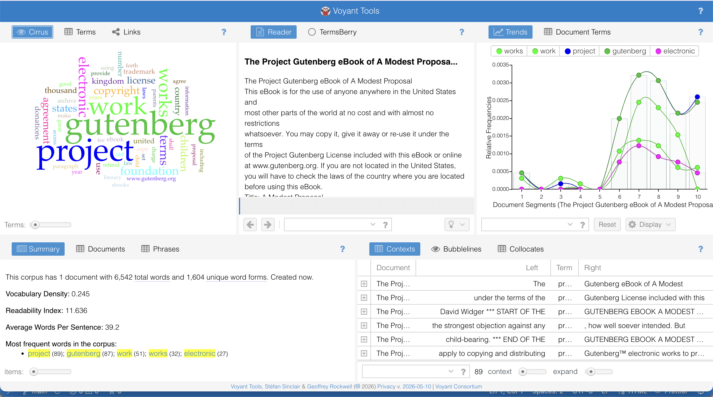

Make 5 · Week 6 · Text Analysis
Voyant vs. GPT: What Happens When Machines Read?
Text: Swift's "A Modest Proposal" · Tools: Voyant Tools, ChatGPT · Week 6

Voyant Analysis
Voyant showed that the most frequent words in Swift's "A Modest Proposal" were "children" (19), "thousand" (15), "kingdom" (15), "country" (12), and "number" (11). This immediately highlighted how much the essay focuses on population and statistics. The trends view also showed that words like "trade," "million," and "food" appear more toward the end, suggesting a shift into economic reasoning as the proposal develops. The word cloud made repetition visually obvious — especially how often Swift frames his argument in terms of counting and national benefit.
Voyant helped me notice how structured and numerical the essay is. However, it did not explain why those patterns mattered. It could not show that Swift's repetition of numbers is part of his satire, or that reducing "children" to statistics is meant to criticize dehumanization.
GPT Analysis
ChatGPT performed a close reading. It explained themes (dehumanization, colonial oppression, satire), analyzed tone and irony, connected imagery to meaning, and placed the essay in historical and political context. Its top conclusion: "A Modest Proposal uses grotesque imagery, economic language, and biting irony to expose the moral failures of 18th-century society." ChatGPT answered the question Voyant could not: What does this mean, and why did Swift write it this way?
Comparison
The main difference lies in how each tool approaches the text. Voyant focuses on patterns that can be measured — word frequency and distribution. ChatGPT focuses on interpreting meaning. Voyant's data showed that "children" and "number" appear repeatedly — but it could not tell me that treating children as a numerical commodity is the core of Swift's satirical argument. ChatGPT can. At the same time, Voyant provides visual, verifiable evidence of patterns that makes claims about repetition concrete. ChatGPT interprets fluently but its process is invisible — it sounds authoritative even when it might be oversimplifying.
Reflection: What do we gain and lose when machines "read" for us?
What we gain is speed and pattern recognition. Voyant quickly showed me that Swift's essay relies heavily on counting and statistics. Through close reading alone, I might have noticed the economic language — but I probably wouldn't have realized just how structurally numerical the essay is. Seeing that visually made Swift's obsession with numbers feel more intentional.
What we lose is depth and judgment. Voyant treats frequency as importance, even though some of the most powerful moments in A Modest Proposal come from shocking imagery that doesn't repeat often. GPT sounds authoritative but sometimes smooths over complexity. It can generalize Swift's critique or miss subtle tensions unless prompted carefully.
Voyant imagines meaning as measurable patterns. GPT imagines meaning as a coherent explanation. Combining them helped me see both structure and interpretation — but it also made me realize that human judgment is still necessary. Only a human reader can decide which patterns actually matter, recognize irony in context, and question whether an interpretation makes sense. Machines can assist reading, but they cannot replace the responsibility of making meaning. One transparency issue worth noting: my original GPT prompt accidentally referenced Shakespeare's Sonnet 18 rather than Swift's essay — a mismatch that undermines the comparison. The analysis I received was still about A Modest Proposal because GPT corrected for context, but the prompt itself was imprecise, which is exactly the kind of human error that machine reading cannot catch on its own.
Attribution & AI Use Log
- Text Analyzed
- "A Modest Proposal" by Jonathan Swift
- Tools Used
- Voyant Tools (voyant-tools.org), ChatGPT
- GPT Prompt Used
- "Provide a literary analysis of A Modest Proposal by Jonathan Swift, focusing on themes and imagery, considering the historical context to make the analysis more insightful."
- Human Contributions
- Comparison analysis, interpretation of what each tool's outputs reveal about its method, all reflection writing.
- Limitations Noted
- Voyant is transparent about its method (it counts words) but cannot interpret. GPT interprets fluently, but its internal process is not visible — it can sound confident while oversimplifying.